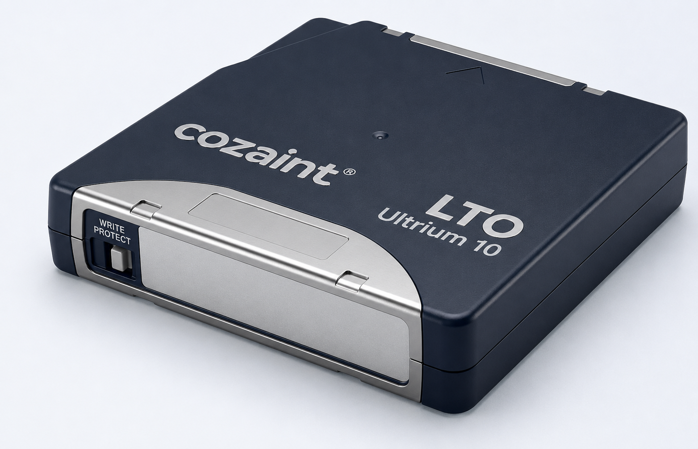
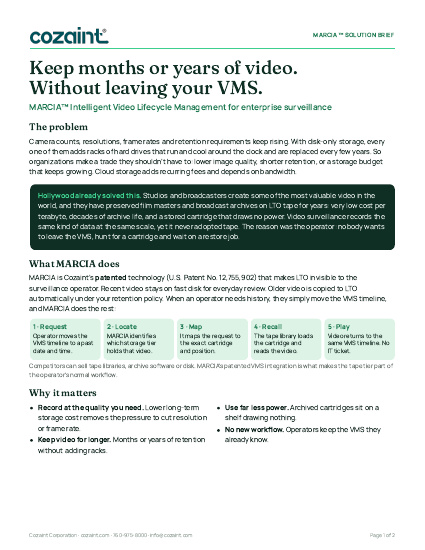

MARCIA™
Enterprise Visual
Continuity
Intelligent Video Lifecycle Management
How MARCIA™ works
One connected lifecycle.
Three clear stages.
Intelligent Video Lifecycle Management keeps recent video ready, moves retained video under policy, and returns requested history through a defined operator workflow.
Active video
Recent video stays ready
Your Video Management System continues its normal work.

Governed retention
Policy moves history
Retention rules govern what moves and when.
Connected workflow
Operators retrieve it
Requested history returns through a defined process.
Operational continuity
Your team keeps working while video moves.
Your team continues its normal work while video recording continues.
- Policy-driven lifecycle movement
- Visible request and retrieval status
- Consistent operator experience
- Governance aligned to retention requirements
Patented technology built for the surveillance workflow
The operator moves the timeline. MARCIA does the rest.
Competitors can sell tape libraries, archive software or disk. What makes MARCIA different is the patented VMS integration that turns LTO into part of the operator's normal workflow: no extra steps, no restore jobs, no IT ticket.
Disk, cloud or MARCIA?
How the options compare for long-term video.
| Disk only | Cloud | MARCIA (disk + LTO) | |
|---|---|---|---|
| Immediate access to recent video | Yes | Yes | Yes, recent tier on disk |
| Multi-year economics | Poor | Variable, recurring fees | Strong |
| Power for archived video | Continuous | Provider's | None for cartridges at rest |
| Depends on internet bandwidth | No | Yes | No |
| Offline (air-gapped) copy | Limited | No | Yes, cartridges can be stored offline |
| Operator workflow | VMS timeline | Often a separate portal | Same VMS timeline |
| Scaling to petabytes | Expensive | Expensive, recurring | Designed for it |
See your own numbers: compare MARCIA with hard drive systems and cloud for your cameras and retention →
Why keep more video?
Storage savings start the conversation. Trusted Visual Evidence is why it matters.
Works with the VMS you already run
Validated on enterprise tape

MARCIA™ Solution Brief
Everything about MARCIA on two pages.
- The storage problem, and the idea Hollywood already proved
- How the patented VMS workflow brings video back from LTO
- Disk vs cloud vs MARCIA, compatibility and a real customer
The complete guide: The Architecture of Intelligent Video Lifecycle Management, the MARCIA™ eBook